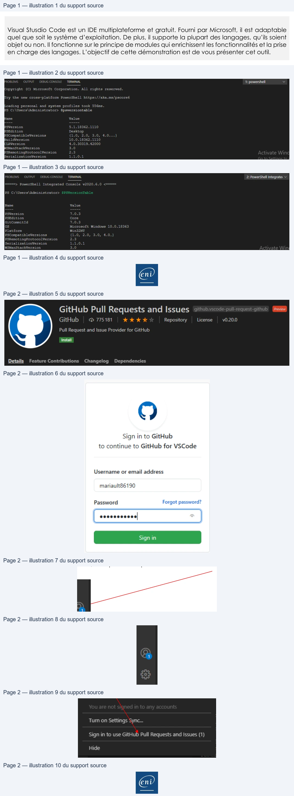

Transcription du document du Drive TSSR. La mise en forme est adaptée au Web ; les compléments IA du portail sont présentés séparément.
Initiation à PowerShell
Démonstration 02 du module 5
Visual Stusdio Code est un IDE multiplateforme et gratuit. Fourni par Microsoft, il est adaptable
quel que soit le système d’exploitation. De plus, il supporte la plupart des langages, qu’ils soient
objet ou non. Il fonctionne sur le principe de modules qui enrichissent les fonctionnalités et la prise
en charge des langages. L’objectif de cette démonstration est de vous présenter cet outil.
•
La version utilisée est la 1.49.1.
•
En plus des environnements habituels dans un IDE, on retrouve des éléments qui facilitent le
traitement d’un script.
•
La console supporte plusieurs versions de PowerShell.
La première console utilise PowerShell intégré qui est en version 5.1
La seconde utilise la console PowerShell Core qui est version 7.0.3
Tout comme ISE, Visual Studio Code dispose de la gestion des thèmes de couleur, de la coloration
syntaxique en fonction des éléments du script ainsi que d’une autocomplétion accessible avec la
touche Tabulation.
Page 1/2
© ENI – Tous droits réservés
TERMINAL
1: powershell
v
Copyright
(C)
Microsoft
Corporation.
All
rights
reserved.
ry the
new cross-platform PowerShell
https://aka.ms/pscore6
oading personal
and system profiles
took
55éms.
PS C:\Users\Administrator>
$psversiontable
Psversion
5.1.18362.1110
PSEdition
Desktop
PSCompatibleVersions
EL, A, EC
Cobol}
BuildVersion
10.0.18362.1110
CLRVersion
4.0.30319.42000
WSManStackVersion
3.0
PSRemotingProtocolVersion
2.3
SerializationVersion
1.1.0.1
PROBLEMS
OUTPU
DEBUG CONSOLE
TERMINAL
2: PowerShell Integrate: v
=====>
PowerShell
Integrated
Console v2020.6.0
<———
PS
C:\Users\Administrator:
Name
Value
PSVersion
7.0.3
PSEdition
Core
GitCommitId
7.0.3
OS
Microsoft
Windows
10.0.18363
Platform
Win32NT
PSCompatibleVersions
{1.0,
2.0,
3.0,
4.0_}
PSRemotingProtocolVersion
FE
SerializationVersion
1.1.0.1
WSManStackVersion
3.0
Initiation à PowerShell
Il apporte en plus une suite de modules gratuits ou payants incluant de nombreux outils utiles à la
gestion des erreurs par exemple ou à l’exécution en parallèle de plusieurs scripts.
Il est également possible de lier le logiciel à un compte GitHub afin de travailler à partir d’un dépôt
de scripts personnels en ligne.
•
La première étape est d’installer l’extension GitHub sur votre IDE.
•
Ensuite, il suffit de créer un compte sur www.github.com puis de créer un repository.
•
Puis connecter le compte Visual Studio Code
Si aucune fenêtre de connexion automatique ne
s’ouvre, vous pouvez cliquer en bas à sur cette icône.
Puis cliquer ici pour ouvrir la page de connexion.
Vous pouvez maintenant utiliser votre espace en ligne pour stocker vos scripts et le partager avec
d’autres personnes. La plateforme GitHub contient également des centaines de milliers de scripts,
de modules d’exemple, de fichiers d’aide, etc.
Voir
la
procédure
fournie
par
Microsoft
pour
l’utilisation
de
GitHub :
https://code.visualstudio.com/docs/editor/github
Page 2/2
© ENI – Tous droits réservés
GitHub Pull Requests and Issues
Preview
GitHub
D 775181
Repository
License
v0.20.0
Pull Request and Issue Provider for GitHub
Install
Details
Feature
Contributions
Changelog
Dependencies
Sign in to GitHub
to continue to GitHub for VSCode
Username or email address
mariault86190
Password
Forgot password?
Tum on Settings Sync...
scesccscons|
°
Sign in to use GitHub Pull Requests and Issues (1)
Hide
